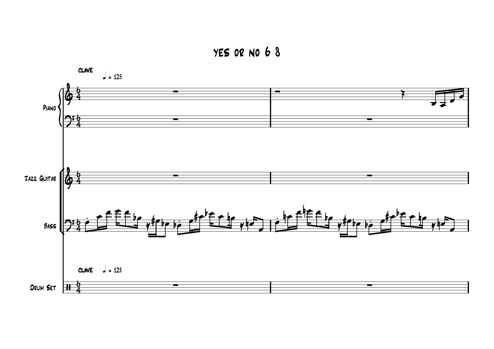

Yes or No — score-led arrangement
This page documents a real score-led arrangement inside the From Cow to Beef project. I refined the arrangement at event level and connected it to Python tooling that produces editable MIDI and MusicXML outputs.
Score excerpt

This is a single visual excerpt from the score material used in the project. It shows the piano, guitar, bass, and drum-set parts in 6/8.
Arrangement work
- 2,304 timestamped events across six voices: flute, synth, guitar, alto, tenor, and bass.
- 48 bars in 6/8 followed by a 16-bar 4/4 swing section.
- 1,648 preserved source events and 656 added arrangement events.
- A Python generator for editable MIDI and MusicXML, plus an interactive score tool in the public game repository.
What this shows
The work connects musical structure to software structure: meters, voices, timing, and arrangement choices are represented as editable data rather than only rendered audio.
Publication boundary
The underlying source material was supplied for the project. This portfolio uses one visual excerpt to document the arrangement work; it does not re-host the full score or audio files. The public music-source repository remains the place to inspect the implementation.